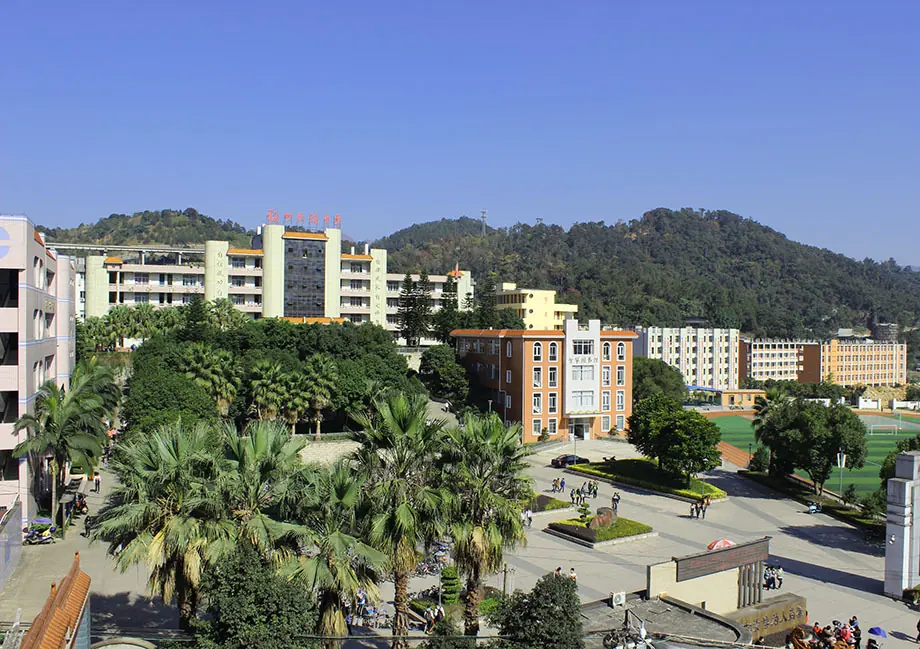
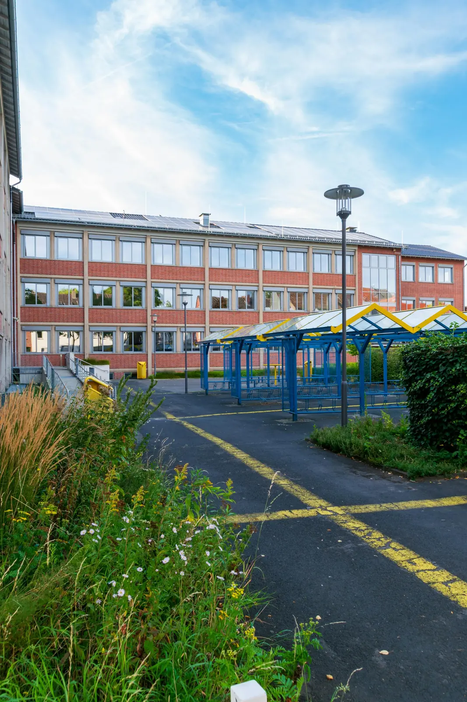

了解学校
阅读学校概况、课程安排、民族文化教育和校园生活介绍。

在福州罗源的山海之间，福州民族中学把普通高中教育、民族团结进步教育和学生全面发展连接在一起。 了解我们的课程、校园生活与文化特色，找到属于你的成长方向。
你可以通过招生咨询、校园开放日、班级介绍和线上资料了解学校的课程安排、培养特色与报读流程。
学校以民族团结进步教育为特色，将畲族文化传承、课堂学习、艺术体育和社会实践融入校园生活。
学校关注学习习惯、学科基础和身心发展，通过课堂教学、社团活动、研学实践与教师陪伴支持学生成长。
Campus Video
通过视频先感受校园环境、课堂氛围和学生活动。视频支持手机端自适应播放，也可以全屏观看。
从了解学校开始，到咨询招生政策、准备相关材料、参加学校组织的沟通与体验活动， 每一步都帮助学生和家庭更清楚地认识这所学校是否适合自己。
阅读学校概况、课程安排、民族文化教育和校园生活介绍。
根据招生通知联系学校，确认报名时间、范围与材料要求。
参加校园开放、政策说明或面向学生家庭的咨询活动。
走进校园，看看课堂、操场、社团和民族文化活动如何构成学生真实的一天。 也可以通过线上资料先了解学校环境、课程安排和校园生活。
在共同体中学习，也在文化传承中认识自己。学校把课堂、校园生活和民族文化体验放在同一个成长场景里， 让学生在真实关系中建立自信、责任与方向感。
Explore student life
学生在课堂学习、文化活动、社团实践和同伴交往中不断确认自己的兴趣， 也学会以开放、尊重和协作回应真实世界。
Financial Aid
页面为宣传设计示例，具体收费、资助与招生政策请以学校正式发布信息为准。 学校正式公告发布后，可在这里呈现报名条件、资助说明和咨询方式。
本页资料参考公开信息，仅用于网页视觉设计展示。正式招生、学籍、收费、资助和校园管理信息， 请以主管部门与学校官方公告为准。